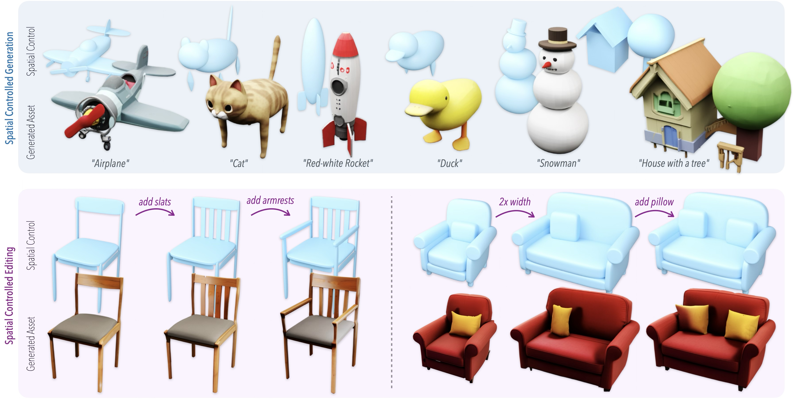
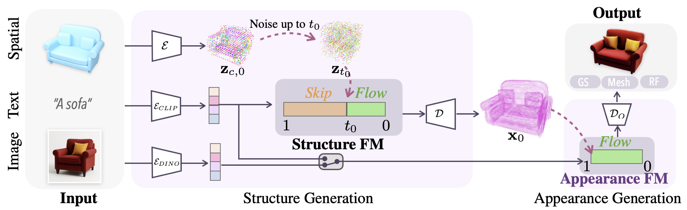
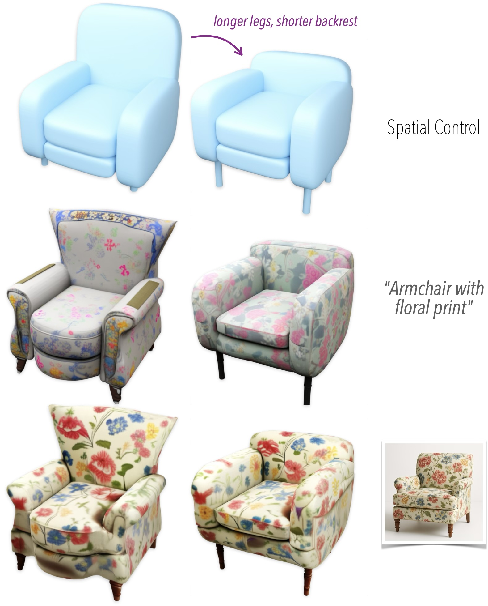

Overview of SpaceControl. SpaceControl enables spatially controlled 3D asset generation using simple geometric primitives such as superquadrics (light blue) or other geometry (e.g., meshes). Top: rapid asset generation. From quick 3D sketches and brief text prompts, we can generate high quality assets. Bottom: fine-grained editing, including adjusting a chair's backrest and adding armrests (left) or precisely controlling a sofa’s dimensions and pillow arrangements (right).
Given an input conditioning which includes a spatial control, a text prompt and an image (optional), SpaceControl produces realistic 3D assets. First the different conditionings are encoded in a latent space. Specifically, the spatial control is voxelized and encoded by Trellis's encoder, the text is encoded by a CLIP encoder, and the image (if present) is encoded by a DINOv2 encoder. The obtained latents \( z_{0,c} \) are noised up to \( t_0 \) to obtain \( z_{t_0} \). From \( t_0 \) to \( t = 0 \), \( z_{t_0} \) are denoised by the Structure Flow Model (FM), guided by the text prompt features. The clean latents \( z_0 \) are then fed into the decoder \( D \), which outputs the voxel grid \( x_0 \). Then, the active voxels are augmented with point-wise noisy latent features, denoised by the Appearance Flow Model (FM), using either text or image conditioning. The clean latents can then be decoded into versatile output formats such as 3D gaussians (GS), radiance fields (RF), and meshes (M) via specific decoders \( \mathcal{D}_{O} = \{ \mathcal{D}_{\mathrm{GS}}, \mathcal{D}_{\mathrm{RF}}, \mathcal{D}_{\mathrm{M}} \} \).

SpaceControl enables different control strengths which lead to varying levels of adherence to the input geometric prompts. By adjusting the control strength, users can influence the balance between geometric fidelity and visual realism in the generated 3D assets.
SpaceControl supports multi-modal control for 3D asset generation by combining spatial guidance via superquadrics with natural language and optional image conditioning. While the model can synthesize assets using only superquadrics and textual prompts, images are particularly useful for maintaining visual consistency during object edits.

@article{fedele2025spacecontrol,
title = {{SpaceControl: Introducing Test-Time Spatial Control to 3D Generative Modeling}},
author = {Fedele, Elisabetta and Engelmann, Francis and Huang, Ian and Litany, Or and Pollefeys, Marc and Guibas, Leonidas},
booktitle = {{PDF}},
year = {2025}
}